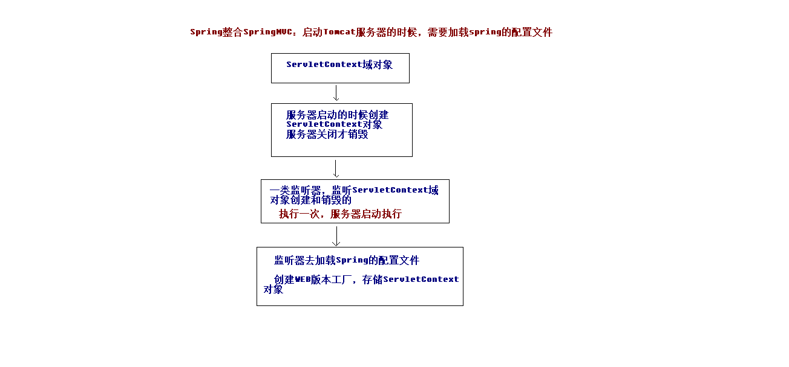

SSM框架的整合
整合说明

搭建整合环境
- 整合说明：SSM整合可以使用多种方式，咱们会选择XML + 注解的方式
- 整合的思路
- 先搭建整合的环境
- 先把Spring的配置搭建完成
- 再使用Spring整合SpringMVC框架
- 最后使用Spring整合MyBatis框架
- 创建数据库和表结构
- 语句
1 | create database ssm; |
- 创建maven的工程（今天会使用到工程的聚合和拆分的概念，这个技术maven高级会讲）
- 创建ssm_parent父工程（打包方式选择pom，必须的）
- 创建ssm_web子模块（打包方式是war包）
- 创建ssm_service子模块（打包方式是jar包）
- 创建ssm_dao子模块（打包方式是jar包）
- 创建ssm_domain子模块（打包方式是jar包）
- web依赖于service，service依赖于dao，dao依赖于domain
- 在ssm_parent的pom.xml文件中引入坐标依赖
1 | <properties> |
- 部署ssm_web的项目，只要把ssm_web项目加入到tomcat服务器中即可
- 编写实体类，在ssm_domain项目中编写
1 | import java.io.Serializable; |
- 编写dao接口
1 | import java.util.List; |
- 编写service接口和实现类
1 |
|
第二章：Spring框架代码的编写
搭建和测试Spring的开发环境
在ssm_web项目中创建applicationContext.xml的配置文件，编写具体的配置信息。
1 | <?xml version="1.0" encoding="UTF-8"?> |
- 在ssm_web项目中编写测试方法，进行测试
1 | public class ServiceTest { |
第三章：Spring整合SpringMVC框架
搭建和测试SpringMVC的开发环境
在web.xml中配置DispatcherServlet前端控制器

1 | <!-- 配置前端控制器：服务器启动必须加载，需要加载springmvc.xml配置文件 --> |
- 在web.xml中配置DispatcherServlet过滤器解决中文乱码
1 | <!-- 配置解决中文乱码的过滤器 --> |
- 创建springmvc.xml的配置文件，编写配置文件
1 | <?xml version="1.0" encoding="UTF-8"?> |
- 测试SpringMVC的框架搭建是否成功
- 编写index.jsp和list.jsp编写，超链接
1 | <a href="account/findAll">查询所有</a> |
- 创建AccountController类，编写方法，进行测试
1 |
|
Spring整合SpringMVC的框架
目的：在controller中能成功的调用service对象中的方法。
- 在项目启动的时候，就去加载applicationContext.xml的配置文件，在web.xml中配置ContextLoaderListener监听器（该监听器只能加载WEB-INF目录下的applicationContext.xml的配置文件）。
1 | <!-- 配置Spring的监听器 --> |
- 在controller中注入service对象，调用service对象的方法进行测试
1 |
|
第四章：Spring整合MyBatis框架
搭建和测试MyBatis的环境
在web项目中编写SqlMapConfig.xml的配置文件，编写核心配置文件
1 | <?xml version="1.0" encoding="UTF-8"?> |
- 在AccountDao接口的方法上添加注解，编写SQL语句
1 | public interface AccountDao { |
- 编写测试的方法
1 |
|
Spring整合MyBatis框架
目的：把SqlMapConfig.xml配置文件中的内容配置到applicationContext.xml配置文件中
1 | <!-- 配置C3P0的连接池对象 --> |
- 在AccountDao接口中添加@Repository注解
- 在service中注入dao对象，进行测试
- 代码如下
1 | @Repository |
1 |
|
1 |
|
5. 配置Spring的声明式事务管理
1 | <!-- 配置事务管理器 --> |
6. 测试保存帐户的方法
1 | <form action="account/saveAccount" method="post"> |